Chapter 2: Book II. Theory of Rectangles¶
2.1 Book II. Theory of Rectangles¶
Every Proposition in the Second Book has either a square or a rectangle in its enunciation. Before commencing it the student should read the following preliminary explanations: by their assistance it will be seen that this Book, which is usually considered difficult, will be rendered not only easy, but almost intuitively evident.
1. As the linear unit is that by which we express all linear measures, so the square unit is that to which all superficial measures are referred. Again, as there are different linear units in use, such as in this country, inches, feet, yards, miles, &c., and in France, metres, and their multiples or sub-multiples, so different square units are employed.
2. A square unit is the square described on a line whose length is the linear unit. Thus a square inch is the square described on a line whose length is an inch; a square foot is the square described on a line whose length is a foot, &c.
3. If we take a linear foot, describe a square on it, divide two adjacent sides each into twelve equal parts, and draw parallels to the sides, we evidently divide the square foot into square inches; and as there will manifestly be 12 rectangular parallelograms, each containing 12 square inches, the square foot contains 144 square inches.
In the same manner it can be shown that a square yard contains 9 square feet; and so in general the square described on any line contains n2 times the square described on the nth part of the line. Thus, as a simple case, the square on a line is four times the square on its half. On account of this property the second power of a quantity is called its square; and, conversely, the square on a line AB is expressed symbolically by AB2.
4. If a rectangular parallelogram be such that two adjacent sides contain respectively m and n linear units, by dividing one side into m and the other into n equal parts, and drawing parallels to the sides, the whole area is evidently divided into mn square units. Hence the area of the parallelogram is found by multiplying its length by its breadth, and this explains why we say (see Def. iv.) a rectangle is contained by any two adjacent sides; for if we multiply the length of one by the length of the other we have the area. Thus, if AB, AD be two adjacent sides of a rectangle, the rectangle is expressed by AB.AD.
Definitions.
i. If a point C be taken in a line AB, the parts AC, CB are called segments, and C a point of division.
ii. If C be taken in the line AB produced, AC, CB are still called the segments of the line AB; but C is called a point of external division.
iii. A parallelogram whose angles are right angles is called a rectangle.
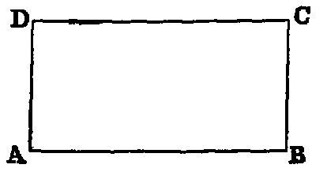
iv. A rectangle is said to be contained by any two adjacent sides. Thus the rectangle ABCD is said to be contained by AB, AD, or by AB, BC, &c.
v. The rectangle contained by two separate lines such as AB and CD is the parallelogram formed by erecting a perpendicular to AB, at A, equal to CD, and drawing parallels: the area of the rectangle will be AB.CD.
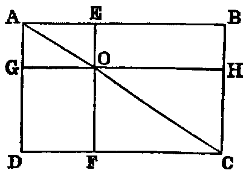
vi. In any parallelogram the figure which is composed of either of the parallelograms about a diagonal and the two complements [see I., xliii.] is called a gnomon. Thus, if we take away either of the parallelograms AO, OC from the parallelogram AC, the remainder is called a gnomon.
PROP. I.—Theorem.
If there be two lines (A, BC), one of which is divided into any number of parts (BD, DE, EC), the rectangle contained by the two lines (A, BC), is equal to the sum of the rectangles contained by the undivided line (A) and the several parts of the divided line.
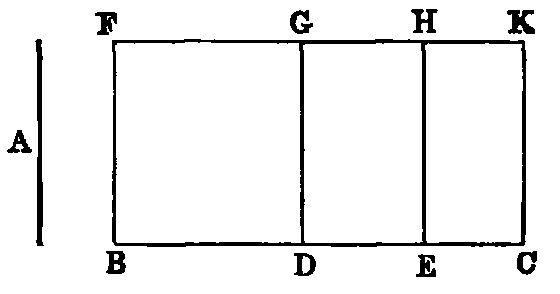
Dem.—Erect BF at right angles to BC [I., xi.] and make it equal to A. Complete the parallelogram BK (Def. v.). Through D, E draw DG, EH parallel to BF. Because the angles at B, D, E are right angles, each of the quadrilaterals BG, DH, EK is a rectangle. Again, since A is equal to BF (const.), the rectangle contained by A and BC is the rectangle contained by BF and BC (Def. v.); but BK is the rectangle contained by BF and BC. Hence the rectangle contained by A and BC is BK. In like manner the rectangle contained by A and BD is BG. Again, since A is equal to BF (const.), and BF is equal to DG [I. xxxiv.], A is equal to DG. Hence the rectangle contained by A and DE is the figure DH (Def. v.). In like manner the rectangle contained by A and EC is the figure EK. Hence we have the following identities:—
| Rectangle | contained | by A | and | BD ≡ BG. |
|---|---|---|---|---|
| ,, | ,, | A | ,, | DE ≡ DH. |
| ,, | ,, | A | ,, | EC ≡ EK. |
| ,, | ,, | A | ,, | BC ≡ BK. |
But BK is equal to the sum of BG, DH, EK (I., Axiom ix.). Therefore the rectangle contained by A and BC is equal to the sum of the rectangles contained by A and BD, A and DE, A and EC.
If we denote the lines BD, DE, EC by a, b, c, the Proposition asserts that the rectangle contained by A, and a + b + c is equal to the sum of the rectangles contained by A and a, A and b, A and c, or, as it may be written, A(a + b + c) = Aa + Ab + Ac. This corresponds to the distributive law in multiplication, and shows that rectangles in Geometry, and products in Arithmetic and Algebra, are subject to the same rules.
Illustration.—Suppose A to be 6 inches; BD, 5 inches; DE, 4 inches; EC, 3 inches; then BC will be 12 inches; and the rectangles will have the following values:—
| Rectangle | A.BC = 6 × 12 = 72 | square inches. |
|---|---|---|
| ,, | A.BD = 6 × 5 = 30 | ,, |
| ,, | A.DE = 6 × 4 = 24 | ,, |
| ,, | A.EC = 6 × 3 = 18 | ,, |
Now the sum of the three last rectangles, viz. 30, 24, 18, is 72. Hence the rectangle A.BC = A.BD + A.DE + A.EC.
The Second Book is occupied with the relations between the segments of a line divided in various ways. All these can be proved in the most simple manner by Algebraic Multiplication. We recommend the student to make himself acquainted with the proofs by this method as well as with those of Euclid. He will thus better understand the meaning of each Proposition.
Cor. 1.—The rectangle contained by a line and the difference of two others is equal to the difference of the rectangles contained by the line and each of the others.
Cor. 2.—The area of a triangle is equal to half the rectangle contained by its base and perpendicular.
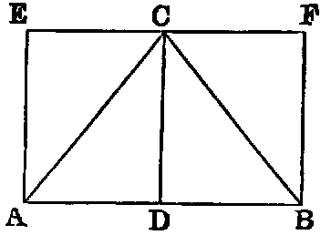
Dem.—From the vertex C let fall the perpendicular CD. Draw EF parallel to AB, and AE, BF each parallel to CD. Then AF is the rectangle contained by AB and BF; but BF is equal to CD. Hence AF = AB.CD; but [I. xli.] the triangle ABC is = half the parallelogram AF. Therefore the triangle ABC is = AB.CD.
PROP. II.—Theorem.
If a line (AB) be divided into any two parts (at C), the square on the whole line is equal to the sum of the rectangles contained by the whole and each of the segments (AC, CB).
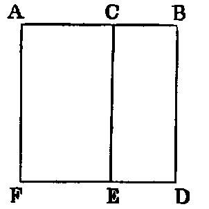
Dem.—On AB describe the square ABDF [I. xlvi.], and through C draw CE parallel to AF [I. xxxi.]. Now, since AB is equal to AF, the rectangle contained by AB and AC is equal to the rectangle contained by AF and AC; but AE is the rectangle contained by AF and AC. Hence the rectangle contained by AB and AC is equal to AE. In like manner the rectangle contained by AB and CB is equal to the figure CD. Therefore the sum of the two rectangles AB.AC, AB.CB is equal to the square on AB.
| Or thus: | AB | = AC + CB, | |||||||||
|---|---|---|---|---|---|---|---|---|---|---|---|
| and | AB | = AB. | |||||||||
| Hence, multiplying, we get | AB2 | = AB.AC + AB.CB. |
This Proposition is the particular case of i. when the divided and undivided lines are equal, hence it does not require a separate Demonstration.
PROP. III.—Theorem.
If a line (AB) be divided into two segments (at C), the rectangle contained by the whole line and either segment (CB) is equal to the square on that segment together with the rectangle contained by the segments.
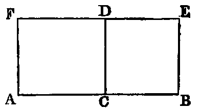
Dem.—On BC describe the square BCDE [I. xlvi.]. Through A draw AF parallel to CD: produce ED to meet AF in F. Now since CB is equal to CD, the rectangle contained by AC, CB is equal to the rectangle contained by AC, CD; but the rectangle contained by AC, CD is the figure AD. Hence the rectangle AC.CB is equal to the figure AD, and the square on CB is the figure CE. Hence the rectangle AC.CB, together with the square on CB, is equal to the figure AE.
Again, since CB is equal to BE, the rectangle AB.CB is equal to the rectangle AB.BE; but the rectangle AB.BE is equal to the figure AE. Hence the rectangle AB.CB is equal to the figure AE. And since things which are equal to the same are equal to one another, the rectangle AC.CB, together with the square on CB, is equal to the rectangle AB.CB.
| Or thus: | AB | = AC + CB, | ||||||||
|---|---|---|---|---|---|---|---|---|---|---|
| CB | = CB. | |||||||||
| Hence | AB.CB | = AC.CB + CB2. |
Prop. iii. is the particular case of Prop. i., when the undivided line is equal to a segment of the divided line.
PROP. IV.—Theorem.
If a line (AB) be divided into any two parts (at C), the square on the whole line is equal to the sum of the squares on the parts (AC, CB), together with twice their rectangle.
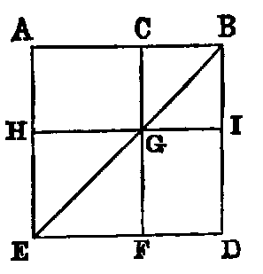
Dem.—On AB describe a square ABDE. Join EB; through C draw CF parallel to AE, intersecting BE in G; and through G draw HI parallel to AB.
Now since AE is equal to AB, the angle ABE is equal to AEB [I. v.]; but since BE intersects the parallels AE, CF, the angle AEB is equal to CGB [I. xxix.]. Hence the angle CBG is equal to CGB, and therefore [I. vi.] CG is equal to CB; but CG is equal to BI and CB to GI. Hence the figure CBIG is a lozenge, and the angle CBI is right. Hence (I., Def. xxx.) it is a square. In like manner the figure EFGH is a square.
Again, since CB is equal to CG, the rectangle AC.CB is equal to the rectangle AC.CG; but AC.CG is the figure AG (Def. iv.). Therefore the rectangle AC.CB is equal to the figure AG. Now the figures AG, GD are equal [I. xliii.], being the complements about the diagonal of the parallelogram AD. Hence the parallelograms AG, GD are together equal to twice the rectangle AC.CB. Again, the figure HF is the square on HG, and HG is equal to AC. Therefore HF is equal to the square on AC, and CI is the square on CB; but the whole figure AD, which is the square on AB, is the sum of the four figures HF, CI, AG, GD. Therefore the square on AB is equal to the sum of the squares on AC, CB, and twice the rectangle AC.CB.
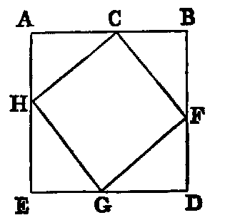
Or thus: On AB describe the square ABDE, and cut off AH, EG, DF each equal to CB. Join CF, FG, GH, HC. Now the four △s ACH, CBF, FDG, GEH are evidently equal; therefore their sum is equal to four times the △ACH; but the △ACH is half the rectangle AC.AH (i. Cor. 2)—that is, equal to half the rectangle AC.CB. Therefore the sum of the four triangles is equal to 2AC.CB.
Again, the figure CFGH is a square [I. xlvi., Cor. 3], and equal to AC2 + AH2 [I. xlvii.]—that is, equal to AC2 + CB2. Hence the whole figure ABDE = AC2 + CB2 + 2AC.CB.
| Or thus: | AB | = AC + CB. | ||||||||
|---|---|---|---|---|---|---|---|---|---|---|
| Squaring, we get | AB2 = | AC2 + 2AC.CB + CB2. |
Cor. 1.—The parallelograms about the diagonal of a square are squares.
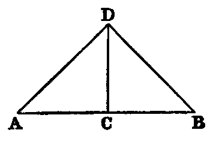
Cor. 2.—The square on a line is equal to four times the square on its half.
For let AB = 2AC, then AB2 = 4AC2.
This Cor. may be proved by the First Book thus: Erect CD at right angles to AB, and make CD = AC or CB. Join AD, DB.
| Then | AD2 = AC2 | + CD2 = 2AC2 | ||||||||
|---|---|---|---|---|---|---|---|---|---|---|
| In like manner, | DB2 | = 2CB2; | ||||||||
| therefore | AD2 + DB2 | = 2AC2 + 2CB2 = 4AC2. |
But since the angle ADB is right, AD2 + DB2 = AB2;
| therefore | AB2 | = 4AC2. | ||||||||
|---|---|---|---|---|---|---|---|---|---|---|
Cor. 3.—If a line be divided into any number of parts, the square on the whole is equal to the sum of the squares on all the parts, together with twice the sum of the rectangles contained by the several distinct pairs of parts.
Exercises.
1. Prove Proposition iv. by using Propositions ii. and iii.
2. If from the vertical angle of a right-angled triangle a perpendicular be let fall on the hypotenuse, its square is equal to the rectangle contained by the segments of the hypotenuse.
3. From the hypotenuse of a right-angled triangle portions are cut off equal to the adjacent sides; prove that the square on the middle segment is equal to twice the rectangle contained by the extreme segments.
4. In any right-angled triangle the square on the sum of the hypotenuse and perpendicular, from the right angle on the hypotenuse, exceeds the square on the sum of the sides by the square on the perpendicular.
5. The square on the perimeter of a right-angled triangle is equal to twice the rectangle contained by the sum of the hypotenuse and one side, and the sum of the hypotenuse and the other side.
PROP. V.—Theorem.
If a line (AB) be divided into two equal parts (at C), and also into two unequal parts (at D), the rectangle (AD.DB) contained by the unequal parts, together with the square on the part (CD) between the points of section, is equal to the square on half the line.
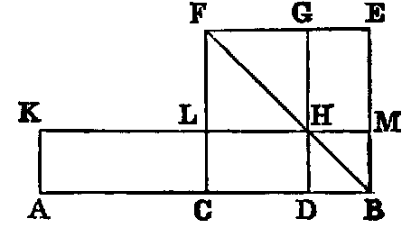
Dem.—On CB describe the square CBEF [I. xlvi.]. Join BF. Through D draw DG parallel to CF, meeting BF in H. Through H draw KM parallel to AB, and through A draw AK parallel to CL [I. xxxi.].
The parallelogram CM is equal to DE [I. xliii., Cor. 2]; but AL is equal to CM [I. xxxvi.], because they are on equal bases AC, CB, and between the same parallels; therefore AL is equal to DE: to each add CH, and we get the parallelogram AH equal to the gnomon CMG; but AH is equal to the rectangle AD.DH, and therefore equal to the rectangle AD.DB, since DH is equal to DB [iv., Cor. 1]; therefore the rectangle AD.DB is equal to the gnomon CMG, and the square on CD is equal to the figure LG. Hence the rectangle AD.DB, together with the square on CD, is equal to the whole figure CBEF—that is, to the square on CB.
| Or thus: | AD | = AC + CD = BC + CD; | |||||||
|---|---|---|---|---|---|---|---|---|---|
| DB | = BC − CD; | ||||||||
| therefore | AD.BD | = (BC + CD)(BC − CD) = BC2 − CD2. | |||||||
| Hence | AD.BD + CD2 = BC2. |
Cor. 1.—The rectangle AD.DB is the rectangle contained by the sum of the lines AC, CD and their difference; and we have proved it equal to the difference between the square on AC and the square on CD. Hence the difference of the squares on two lines is equal to the rectangle contained by their sum and their difference.
Cor. 2.—The perimeter of the rectangle AH is equal to 2AB, and is therefore independent of the position of the point D on the line AB; and the area of the same rectangle is less than the square on half the line by the square on the segment between D and the middle point of the line; therefore, when D is the middle point, the rectangle will have the maximum area. Hence, of all rectangles having the same perimeter, the square has the greatest area.
Exercises.
1. Divide a given line so that the rectangle contained by its parts may have a maximum area.
2. Divide a given line so that the rectangle contained by its segments may be equal to a given square, not exceeding the square on half the given line.
3. The rectangle contained by the sum and the difference of two sides of a triangle is equal to the rectangle contained by the base and the difference of the segments of the base, made by the perpendicular from the vertex.
4. The difference of the sides of a triangle is less than the difference of the segments of the base, made by the perpendicular from the vertex.
5. The difference between the square on one of the equal sides of an isosceles triangle, and the square on any line drawn from the vertex to a point in the base, is equal to the rectangle contained by the segments of the base.
6. The square on either side of a right-angled triangle is equal to the rectangle contained by the sum and the difference of the hypotenuse and the other side.
PROP. VI.—Theorem.
If a line (AB) be bisected (at C), and divided externally in any point (D), the rectangle (AD.BD) contained by the segments made by the external point, together with the square on half the line, is equal to the square on the segment between the middle point and the point of external division.
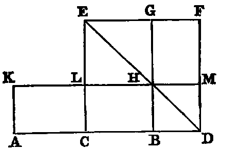
Dem.—On CD describe the square CDFE [I. xlvi.], and join DE; through B draw BHG parallel to CE [I. xxxi.], meeting DE in H; through H draw KLM parallel to AD; and through A draw AK parallel to CL. Then because AC is equal to CB, the rectangle AL is equal to CH [I. xxxvi.]; but the complements CH, HF are equal [I. xliii.]; therefore AL is equal to HF. To each of these equals add CM and LG, and we get AM and LG equal to the square CDFE; but AM is equal to the rectangle AD.DM, and therefore equal to the rectangle AD.DB, since DB is equal to DM; also LG is equal to the square on CB, and CDFE is the square on CD. Hence the rectangle AD.DB, together with the square on CB, is equal to the square on CD.
Or thus:—
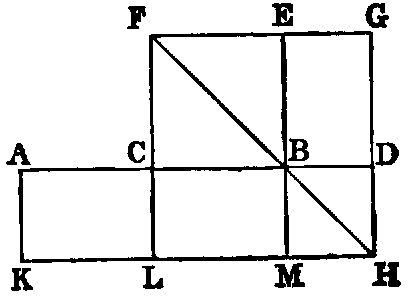
Dem.—On CB describe the square CBEF [I. xlvi.]. Join BF. Through D draw DG parallel to CF, meeting FB produced in H. Through H draw KM parallel to AB. Through A draw AK parallel to CL [I. xxxi.].
The parallelogram CM is equal to DE [I. xliii.]; but AL is equal to CM [I. xxxvi.], because they are on equal bases AC, CB, and between the same parallels; therefore AL is equal to DE. To each add CH, and we get the parallelogram AH equal to the gnomon CMG; but AH is equal to the rectangle AD.DH, and therefore equal to the rectangle AD.DB, since DH is equal to DB [iv., Cor. 1]; therefore the rectangle AD.DB is equal to the gnomon CMG, and the square on CB is the figure CE. Therefore the rectangle AD.DB, together with the square on CB, is equal to the whole figure LHGF—that is, equal to the square on LH or to the square on CD.
| Or thus: | AD = | AC + CD = CD + CB; | |||||||||
|---|---|---|---|---|---|---|---|---|---|---|---|
| BD = | CD − CB. | ||||||||||
| Hence | AD.DB = | (CD + CB)(CD − CB) = CD2 − CB2; | |||||||||
| therefore | AD | .DB + CB2 = CD2. |
Exercises.
1. Show that Proposition vi. is reduced to Proposition v. by producing the line in the opposite direction.
2. Divide a given line externally, so that the rectangle contained by its segments may be equal to the square on a given line.
3. Given the difference of two lines and the rectangle contained by them; find the lines.
4. The rectangle contained by any two lines is equal to the square on half the sum, minus the square on half the difference.
5. Given the sum or the difference of two lines and the difference of their squares; find the lines.
6. If from the vertex C of an isosceles triangle a line CD be drawn to any point in the base produced, prove that CD2 − CB2 = AD.DB.
7. Give a common enunciation which will include Propositions v. and vi.
PROP. VII.—Theorem.
If a right line (AB) be divided into any two parts (at C), the sum of the squares on the whole line (AB) and either segment (CB) is equal to twice the rectangle (2AB.CB) contained by the whole line and that segment, together with the square on the other segment.
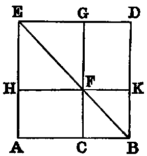
Dem.—On AB describe the square ABDE. Join BE. Through C draw CG parallel to AE, intersecting BE in F. Through F draw HK parallel to AB.
Now the square AD is equal to the three figures AK, FD, and GH: to each add the square CK, and we have the sum of the squares AD, CK equal to the sum of the three figures AK, CD, GH; but CD is equal to AK; therefore the sum of the squares AD, CK is equal to twice the figure AK, together with the figure GH. Now AK is the rectangle AB.BK; but BK is equal to BC; therefore AK is equal to the rectangle AB.BC, and AD is the square on AB; CK the square on CB; and GH is the square on HF, and therefore equal to the square on AC. Hence the sum of the squares on AB and BC is equal to twice the rectangle AB.BC, together with the square on AC.
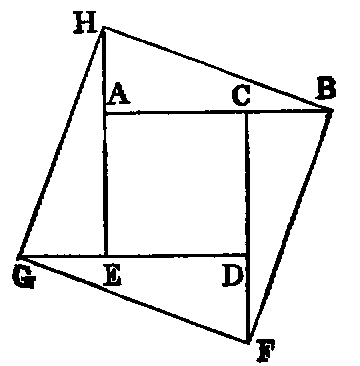
Or thus: On AC describe the square ACDE. Produce the sides CD, DE, EA, and make each produced part equal to CB. Join BF, FG, GH, HB. Then the figure BFGH is a square [I. xlvi., Ex. 3], and it is equal to the square on AC, together with the four equal triangles HAB, BCF, FDG, GEH. Now [I. xlvii.], the figure BFGH is equal to the sum of the squares on AB, AH—that is, equal to the sum of the squares on AB, BC; and the sum of the four triangles is equal to twice the rectangle AB.BC, for each triangle is equal to half the rectangle AB.BC. Hence the sum of the squares on AB, BC is equal to twice the rectangle AB.BC, together with the square on AC.
| Or thus: | AC = AB − BC; | ||||||||||
|---|---|---|---|---|---|---|---|---|---|---|---|
| therefore | AC2 = AB2 − 2AB.BC | + BC2; | |||||||||
| therefore | AC2 + 2AB.BC = AB2 | + BC2. |
Comparison of iv. and vii.
By iv., square on sum = sum of squares + twice rectangle.
By vii., square on difference = sum of squares-twice rectangle.
Cors. from iv. and vii.
1. Square on the sum, the sum of the squares, and the square on the difference of any two lines, are in arithmetical progression.
2. Square on the sum + square on the difference of any two lines = twice the sum of the squares on the lines (Props. ix. and x.).
3. The square on the sum − the square on the difference of any two lines = four times the rectangle under lines (Prop. viii.).
PROP. VIII.–Theorem.
If a line (AB) be divided into two parts (at C), the square on the sum of the whole line (AB) and either segment (BC) is equal to four times the rectangle contained by the whole line (AB) and that segment, together with the square on the other segment (AC).
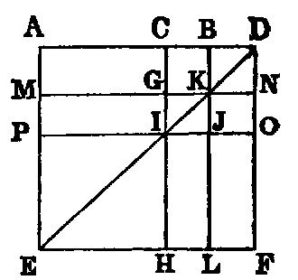
Dem.—Produce AB to D. Make BD equal to BC. On AD describe the square AEFD [I. xlvi.]. Join DE. Through C, B draw CH, BL parallel to AE [I. xxxi.], and through K, I draw MN, PO parallel to AD.
Since CO is the square on CD, and CK the square on CB, and CB is the half of CD, CO is equal to four times CK [iv., Cor. 1]. Again, since CG, GI are the sides of equal squares, they are equal [I. xlvi., Cor. 1]. Hence the parallelogram AG is equal to MI [I. xxxvi.]. In like manner IL is equal to JF; but MI is equal to IL [I. xliii.]. Therefore the four figures AG, MI, IL, JF are all equal; hence their sum is equal to four times AG; and the square CO has been proved to be equal to four times CK. Hence the gnomon AOH is equal to four times the rectangle AK—that is, equal to four times the rectangle AB.BC, since BC is equal to BK.
Again, the figure PH is the square on PI, and therefore equal to the square on AC. Hence the whole figure AF, that is, the square on AD, is equal to four times the rectangle AB.BC, together with the square on AC.
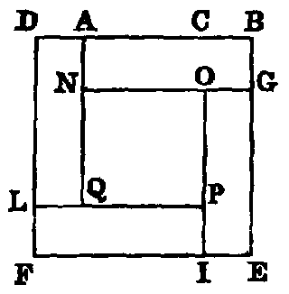
Or thus: Produce BA to D, and make AD = BC. On DB describe the square DBEF. Cut off BG, EI, FL each equal to BC. Through A and I draw lines parallel to DF, and through G and L, lines parallel to AB.
Now it is evident that the four rectangles. AG, GI, IL, LA are all equal; but AG is the rectangle AB.BG or AB.BC. Therefore the sum of the four rectangles is equal to 4AB.BC. Again, the figure NP is evidently equal to the square on AC. Hence the whole figure, which is the square on BD, or the square on the sum of AB and BC, is equal to 4AB.BC + AC2.
| Or thus: | AB + BC | = AC + 2BC; | |||||||||
|---|---|---|---|---|---|---|---|---|---|---|---|
| therefore | (AB + BC)2 | = AC2 + 4AC.CB + 4BC2 | |||||||||
| = AC2 + 4(AC + CB).CB | |||||||||||
| = AC2 + 4AB.BC. |
Direct sequence from v. or vi.
Since by v. or vi. the rectangle contained by any two lines is = the square on half their sum − the square on half their difference; therefore four times the rectangle contained by any two lines = the square on their sum − the square on their difference.
Direct sequence of viii. from iv. and vii.
By iv., the square on the sum = the sum of the squares + twice the rectangle.
By vii., the square on the difference = the sum of the squares − twice the rectangle. Therefore, by subtraction, the square on the sum − the square on the difference = four times the rectangle.
Exercises.
1. In the figure [I. xlvii.] if EF, GK be joined, prove EF2 − CO2 = (AB + BO)2.
2. Prove GK2 − EF2 = 3AB(AO − BO).
3.1 1Ex. 3 occurs in the solution of the problem of the inscription of a regular polygon of seventeen sides in a circle. See note C. Given the difference of two lines = R, and their rectangle = 4R2; find the lines.
PROP. IX.—Theorem.
If a line (AB) be bisected (at C) and divided into two unequal parts (at D), the sum of the squares on the unequal parts (AD, DB) is double the sum of the squares on half the line (AC), and on the segment (CD) between the points of section.
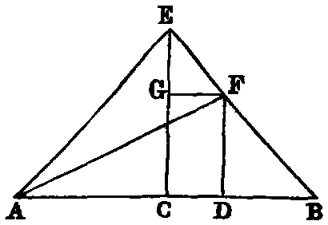
Dem.—Erect CE at right angles to AB, and make it equal to AC or CB. Join AE, EB. Draw DF parallel to CE, and FG parallel to CD. Join AF.
Because AC is equal to CE, and the angle ACE is right, the angle CEA is half a right angle. In like manner the angles CEB, CBE are half right angles; therefore the whole angle AEF is right. Again, because GF is parallel to CB, and CE intersects them, the angle EGF is equal to ECB; but ECB is right (const.); therefore EGF is right; and GEF has been proved to be half a right angle; therefore the angle GFE is half a right angle [I. xxxii.]. Therefore [I. vi.] GE is equal to GF. In like manner FD is equal to DB.
Again, since AC is equal to CE, AC2 is equal to CE2; but AE2 is equal to AC2 + CE2 [I. xlvii.]. Therefore AE2 is equal to 2AC2. In like manner EF2 is equal to 2GF2 or 2CD2. Therefore AE2 + EF2 is equal to 2AC2 + 2CD2; but AE2 + EF2 is equal to AF2 [I. xlvii.]. Therefore AF2 is equal to 2AC2 + 2CD2.
Again, since DF is equal to DB, DF2 is equal to DB2: to each add AD2, and we get AD2 + DF2 equal to AD2 + DB2; but AD2 + DF2 is equal to AF2; therefore AF2 is equal to AD2 + DB2; and we have proved AF2 equal to 2AC2 + 2CD2. Therefore AD2 + DB2 is equal to 2AC2 + 2CD2.
| Or thus: | AD = AC + CD; DB = AC − CD. | |||||||||
|---|---|---|---|---|---|---|---|---|---|---|
| Square and add, and we get | AD2 + DB2 = 2AC2 + 2CD2. |
Exercises.
1. The sum of the squares on the segments of a line of given length is a minimum when it is bisected.
2. Divide a given line internally, so that the sum of the squares on the parts may be equal to a given square, and state the limitation to its possibility.
3. If a line AB be bisected in C and divided unequally in D,
4. Twice the square on the line joining any point in the hypotenuse of a right-angled isosceles triangle to the vertex is equal to the sum of the squares on the segments of the hypotenuse.
5. If a line be divided into any number of parts, the continued product of all the parts is a maximum, and the sum of their squares is a minimum when all the parts are equal.
PROP. X.—Theorem.
If a line (AB) be bisected (at C) and divided externally (at D), the sum of the squares on the segments (AD, DB) made by the external point is equal to twice the square on half the line, and twice the square on the segment between the points of section.
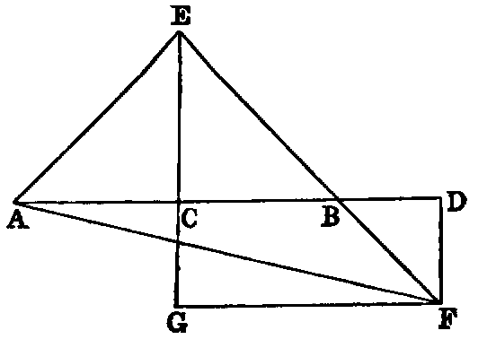
Dem.—Erect CE at right angles to AB, and make it equal to AC or CB. Join AE, EB. Draw DF parallel to CE, and produce EB. Now since DF is parallel to EC, the angle BDF is = to BCE [I. xxix.], and [I. xv.] the angle DBF is = to EBC; but the sum of the angles BCE, EBC is less than two right angles [I. xvii.]; therefore the sum of the angles BDF, DBF is less than two right angles, and therefore [I., Axiom xii.] the lines EB, DF, if produced, will meet. Let them meet in F. Through F draw FG parallel to AB, and produce EC to meet it in G. Join AF.
Because AC is equal to CE, and the angle ACE is right, the angle CEA is half a right angle. In like manner the angles CEB, CBE are half right angles; therefore the whole angle AEF is right. Again, because GF is parallel to CB, and GE intersects them, the angle EGF is equal to ECB [I. xxix.]; but ECB is right (const.); therefore EGF is right, and GEF has been proved to be half a right angle; therefore [I. xxxii.] GFE is half a right angle, and therefore [I. vi.] GE is equal to GF. In like manner FD is equal to DB.
Again, since AC is equal to CE, AC2 is equal to CE2; but AE2 is equal to AC2 + CE2 [I. xlvii.]; therefore AE2 is equal to 2AC2. In like manner EF2 is equal to 2GF2 or 2CD2; therefore AE2 + EF2 is equal to 2AC2 + 2CD2; but AE2 + EF2 is equal to AF2 [I. xlvii.]. Therefore AF2 is equal to 2AC2 + 2CD2.
Again, since DF is equal to DB, DF2 is equal to DB2: to each add AD2, and we get AD2 + DF2 equal to AD2 + DB2; but AD2 + DF2 is equal to AF2; therefore AF2 is equal to AD2 + DB2; and AF2 has been proved equal to 2AC2 + 2CD2. Therefore AD2 + DB2 is equal to 2AC2 + 2CD2.
| Or thus: | AD = CD + AC, | ||||||||
|---|---|---|---|---|---|---|---|---|---|
| BD = CD − AC. |
Square and add, and we get AD2 + BD2 = 2CD2 + 2AC2.
The following enunciations include Propositions ix. and x.:—
1. The square on the sum of any two lines plus the square on their difference equal twice the sum of their squares.
2. The sum of the squares on any two lines it equal to twice the square on half the sum plus twice the square on half the difference of the lines.
3. If a line be cut into two unequal parts, and also into two equal parts, the sum of the squares on the two unequal parts exceeds the sum of the squares on the two equal parts by the sum of the squares of the two differences between the equal and unequal parts.
Exercises
.
1. Given the sum or the difference of any two lines, and the sum of their squares; find the lines.
2. The sum of the squares on two sides AC, CB of a triangle is equal to twice the square on half the base AB, and twice the square on the median which bisects AB.
3. If the base of a triangle be given both in magnitude and position, and the sum of the squares on the sides in magnitude, the locus of the vertex is a circle.
4. If in the △ABC a point D in the base BC be such that
prove that the middle point of AD is equally distant from B and C.
5. The sum of the squares on the sides of a parallelogram is equal to the sum of the squares on its diagonals.
PROP. XI.—Problem.
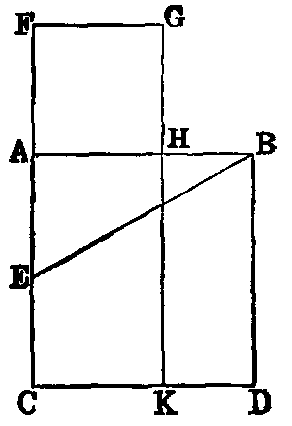
To divide a given finite line (AB) into two segments (in H), so that the rectangle (AB.BH) contained by the whole line and one segment may be equal to the square on the other segment.
Sol.—On AB describe the square ABDC [I. xlvi.]. Bisect AC in E. Join BE. Produce EA to F, and make EF equal to EB. On AF describe the square AFGH. H is the point required.
Dem.—Produce GH to K. Then because CA is bisected in E, and divided externally in F, the rectangle CF.AF, together with the square on EA, is equal to the square on EF [vi.]; but EF is equal to EB (const.); therefore the rectangle CF.AF, together with EA2, is equal to EB2—that is [I. xlvii.] equal to EA2 + AB2. Rejecting EA2, which is common, we get the rectangle CF.AF equal to AB2. Again, since AF is equal to FG, being the sides of a square, the rectangle CF.AF is equal to CF.FG—that is, to the figure CG; and AB2 is equal to the figure AD; therefore CG is equal to AD. Reject the part AK, which is common, and we get the figure FH equal to the figure HD; but HD is equal to the rectangle AB.BH, because BD is equal to AB, and FH is the square on AH. Therefore the rectangle AB.BH is equal to the square on AH.
Def.—A line divided as in this Proposition is said to be divided in “extreme and mean ratio.”
Cor. 1.—The line CF is divided in “extreme and mean ratio” at A.
Cor. 2.—If from the greater segment CA of CF we take a segment equal to AF, it is evident that CA will be divided into parts respectively equal to AH, HB. Hence, if a line be divided in extreme and mean ratio, the greater segment will be cut in the same manner by taking on it a part equal to the less; and the less will be similarly divided by taking on it a part equal to the difference, and so on, &c.
Cor. 3.—Let AB be divided in “extreme and mean ratio” in C, then it is evident (Cor. 2) that AC is greater than CB. Cut off CD = CB; then (Cor. 2) AC is cut in “extreme and mean ratio” at D, and CD is greater than AD. Next, cut off DE equal to AD, and in the same manner we have DE greater than EC, and so on. Now since CD is greater than AD, it is evident that CD is not a common measure of AC and CB, and therefore not a common measure of AB and AC. In like manner AD is not a common measure of AC and CD, and therefore not a common measure of AB and AC. Hence, no matter how far we proceed we cannot arrive at any remainder which will be a common measure of AB and AC. Hence, the parts of a line divided in “extreme and mean ratio” are incommensurable.
Exercises.
1. Cut a line externally in “extreme and mean ratio.”
2. The difference between the squares on the segments of a line divided in “extreme and mean ratio” is equal to their rectangle.
3. In a right-angled triangle, if the square on one side be equal to the rectangle contained by the hypotenuse and the other side, the hypotenuse is cut in “extreme and mean ratio” by the perpendicular on it from the right angle.
4. If AB be cut in “extreme and mean ratio” at C, prove that
| (1) | AB2 + BC2 = 3AC2. | ||
|---|---|---|---|
| (2) | (AB + BC)2 = 5AC2. |
5. The three lines joining the pairs of points G, B; F, D; A, K, in the construction of Proposition xi., are parallel.
6. If CH intersect BE in O, AO is perpendicular to CH.
7. If CH be produced, it meets BF at right angles.
8. ABC is a right-angled triangle having AB = 2AC: if AH be made equal to the difference between BC and AC, AB is divided in “extreme and mean ratio” at H.
PROP. XII.—Theorem.
In an obtuse-angled triangle (ABC), the square on the side (AB) subtending the obtuse angle exceeds the sum of the squares on the sides (BC, CA) containing the obtuse angle, by twice the rectangle contained by either of them (BC), and its continuation (CD) to meet a perpendicular (AD) on it from the opposite angle.
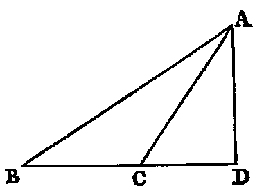
Dem.—Because BD is divided into two parts in C, we have
| BD2 = BC2 | + CD2 + 2BC.CD [iv.] | ||||||
|---|---|---|---|---|---|---|---|
| and | AD2 = AD2. |
Hence, adding, since [I. xlvii.] BD2 + AD2 = AB2, and CD2 + AD2 = CA2, we get
Therefore AB2 is greater than BC2 + CA2 by 2BC.CD.
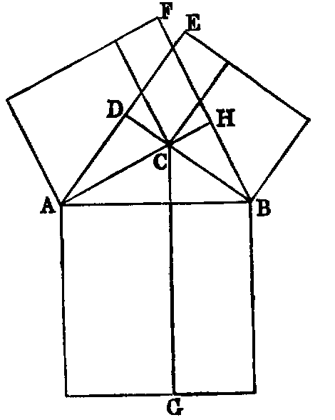
The foregoing proof differs from Euclid’s only in the use of symbols. I have found by experience that pupils more readily understand it than any other method.
Or thus: By the First Book: Describe squares on the three sides. Draw AE, BF, CG perpendicular to the sides of the squares. Then it can be proved exactly as in the demonstration of [I. xlvii.], that the rectangle BG is equal to BE, AG to AF, and CE to CF. Hence the sum of the two squares on AC, CB is less than the square on AB by twice the rectangle CE; that is, by twice the rectangle BC.CD.
Cor. 1.—If perpendiculars from A and B to the opposite sides meet them in H and D, the rectangle AC.CH is equal to the rectangle BC.CD.
Exercises.
1. If the angle ACB of a triangle be equal to twice the angle of an equilateral triangle, AB2 = BC2 + CA2 + BC.CA.
2. ABCD is a quadrilateral whose opposite angles B and D are right, and AD, BC produced meet in E; prove AE.DE = BE.CE.
3. ABC is a right-angled triangle, and BD is a perpendicular on the hypotenuse AC; Prove AB.DC = BD.BC.
4. If a line AB be divided in C so that AC2 = 2CB2; prove that AB2 + BC2 = 2AB.AC.
5. If AB be the diameter of a semicircle, find a point C in AB such that, joining C to a fixed point D in the circumference, and erecting a perpendicular CE meeting the circumference in E, CE2 − CD2 may be equal to a given square.
6. If the square of a line CD, drawn from the angle C of an equilateral triangle ABC to a point D in the side AB produced, be equal to 2AB2; prove that AD is cut in “extreme and mean ratio” at B.
PROP. XIII.—Theorem.
In any triangle (ABC), the square on any side subtending an acute angle (C) is less than the sum of the squares on the sides containing that angle, by twice the rectangle (BC, CD) contained by either of them (BC) and the intercept (CD) between the acute angle and the foot of the perpendicular on it from the opposite angle.
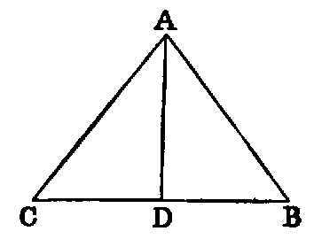
Dem.—Because BC is divided into two segments in D,
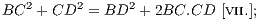
| and | AD2 = AD2. | ||||||||||
|---|---|---|---|---|---|---|---|---|---|---|---|
Hence, adding, since
| CD2 + AD2 = AC2 | [I. xlvii.], | ||||||||
|---|---|---|---|---|---|---|---|---|---|
| and | BD2 + AD2 | = AB2, | |||||||
| we get | BC2 + AC2 | = AB2 + 2BC.CD. |
Therefore AB2 is less than BC2 + AC2 by 2BC.CD.
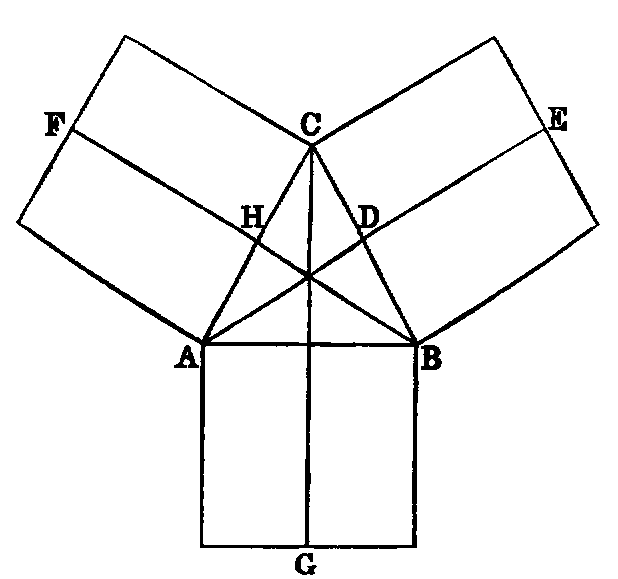
Or thus: Describe squares on the sides. Draw AE, BF, CG perpendicular to the sides; then, as in the demonstration of [I. xlvii.], the rectangle BG is equal to BE; AG to AF, and CE to CF. Hence the sum of the squares on AC, CB exceeds the square on AB by twice CE—that is, by 2BC.CD.
Observation.—By comparing the proofs of the pairs of Props. iv. and vii.; v. and vi.; ix. and x.; xii. and xiii., it will be seen that they are virtually identical. In order to render this identity more apparent, we have made some slight alterations in the usual proofs. The pairs of Propositions thus grouped are considered in Modern Geometry not as distinct, but each pair is regarded as one Proposition.
Exercises.
1. If the angle C of the △ ACB be equal to an angle of an equilateral △, AB2 = AC2 + BC2 − AC.BC.
2. The sum of the squares on the diagonals of a quadrilateral, together with four times the square on the line joining their middle points, is equal to the sum of the squares on its sides.
3. Find a point C in a given line AB produced, so that AC2 + BC2 = 2AC.BC.
PROP. XIV.—Problem.
To construct a square equal to a given rectilineal figure (X).
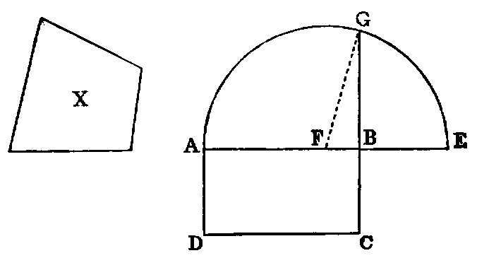
Sol.—Construct [I. xlv.] the rectangle AC equal to X. Then, if the adjacent sides AB, BC be equal, AC is a square, and the problem is solved; if not, produce AB to E, and make BE equal to BC; bisect AE in F; with F as centre and FE as radius, describe the semicircle AGE; produce CB to meet it in G. The square described on BG will be equal to X.
Dem.—Join FG. Then because AE is divided equally in F and unequally in B, the rectangle AB.BE, together with FB2 is equal to FE2 [v.], that is, to FG2; but FG2 is equal to FB2 + BG2 [I. xlvii.]. Therefore the rectangle AB.BE + FB2 is equal to FB2 + BG2. Reject FB2, which is common, and we have the rectangle AB.BE = BG2; but since BE is equal to BC, the rectangle AB.BE is equal to the figure AC. Therefore BG2 is equal to the figure AC, and therefore equal to the given rectilineal figure (X).
Cor.—The square on the perpendicular from any point in a semicircle on the diameter is equal to the rectangle contained by the segments of the diameter.
Exercises.
1. Given the difference of the squares on two lines and their rectangle; find the lines.
2. Divide a given line, so that the rectangle contained by another given line and one segment may be equal to the square on the other segment.
Questions for Examination on Book II.
1. What is the subject-matter of Book II.? Ans. Theory of rectangles.
2. What is a rectangle? A gnomon?
3. What is a square inch? A square foot? A square perch? A square mile? Ans. The square described on a line whose length is an inch, a foot, a perch, &c.
4. What is the difference between linear and superficial measurement? Ans. Linear measurement has but one dimension; superficial has two.
5. When is a line said to be divided internally? When externally?
6. How is the area of a rectangle found?
7. How is a line divided so that the rectangle contained by its segments may be a maximum?
8. How is the area of a parallelogram found?
9. What is the altitude of a parallelogram whose base is 65 metres and area 1430 square metres?
10. How is a line divided when the sum of the squares on its segments is a minimum?
11. The area of a rectangle is 108.60 square metres and its perimeter is 48.20 linear metres; find its dimensions.
12. What Proposition in Book II. expresses the distributive law of multiplication?
13. On what proposition is the rule for extracting the square root founded?
14. Compare I. xlvii. and II. xii. and xiii.
15. If the sides of a triangle be expressed by x2 + 1, x2 − 1, and 2x linear units, respectively; prove that it is right-angled.
16. How would you construct a square whose area would be exactly an acre? Give a solution by I. xlvii.
17. What is meant by incommensurable lines? Give an example from Book II.
18. Prove that a side and the diagonal of a square are incommensurable.
19. The diagonals of a lozenge are 16 and 30 metres respectively; find the length of a side.
20. The diagonal of a rectangle is 4.25 perches, and its area is 7.50 square perches; what are its dimensions?
21. The three sides of a triangle are 8, 11, 15; prove that it has an obtuse angle.
22. The sides of a triangle are 13, 14, 15; find the lengths of its medians; also the lengths of its perpendiculars, and prove that all its angles are acute.
23. If the sides of a triangle be expressed by m2 + n2, m2 − n2, and 2mn linear units, respectively; prove that it is right-angled.
24. If on each side of a square containing 5.29 square perches we measure from the corners respectively a distance of 1.5 linear perches; find the area of the square formed by joining the points thus found.
Exercises on Book II.
1. The squares on the diagonals of a quadrilateral are together double the sum of the squares on the lines joining the middle points of opposite sides.
2. If the medians of a triangle intersect in O, AB2 + BC2 + CA2 = 3(OA2 + OB2 + OC2).
3. Through a given point O draw three lines OA, OB, OC of given lengths, such that their extremities may be collinear, and that AB = BC.
4. If in any quadrilateral two opposite sides be bisected, the sum of the squares on the other two sides, together with the sum of the squares on the diagonals, is equal to the sum of the squares on the bisected sides, together with four times the square on the line joining the points of bisection.
5. If squares be described on the sides of any triangle, the sum of the squares on the lines joining the adjacent corners is equal to three times the sum of the squares on the sides of the triangle.
6. Divide a given line into two parts, so that the rectangle contained by the whole and one segment may be equal to any multiple of the square on the other segment.
7. If P be any point in the diameter AB of a semicircle, and CD any parallel chord, then
8. If A, B, C, D be four collinear points taken in order,
9. Three times the sum of the squares on the sides of any pentagon exceeds the sum of the squares on its diagonals, by four times the sum of the squares on the lines joining the middle points of the diagonals.
10. In any triangle, three times the sum of the squares on the sides is equal to four times the sum of the squares on the medians.
11. If perpendiculars be drawn from the angular points of a square to any line, the sum of the squares on the perpendiculars from one pair of opposite angles exceeds twice the rectangle of the perpendiculars from the other pair by the area of the square.
12. If the base AB of a triangle be divided in D, so that mAD = nBD, then
13. If the point D be taken in AB produced, so that mAD = nDB, then
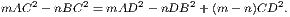
14. Given the base of a triangle in magnitude and position, and the sum or the difference of m times the square on one side and n times the square on the other side, in magnitude, the locus of the vertex is a circle.
15. Any rectangle is equal to half the rectangle contained by the diagonals of squares described on its adjacent sides.
16. If A, B, C. &c., be any number of fixed points, and P a variable point, find the locus of P, if AP2 + BP2 + CP2+ &c., be given in magnitude.
17. If the area of a rectangle be given, its perimeter is a minimum when it is a square.
18. If a transversal cut in the points A, C, B three lines issuing from a point D, prove that
19. Upon the segments AC, CB of a line AB equilateral triangles are described: prove that if D, D′ be the centres of circles described about these triangles, 6DD′2 = AB2 + AC2 + CB2.
20. If a, b, p denote the sides of a right-angled triangle about the right angle, and the perpendicular from the right angle on the hypotenuse,
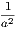
+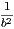
=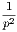
.21. If, upon the greater segment AB of a line AC, divided in extreme and mean ratio, an equilateral triangle ABD be described, and CD joined, CD2 = 2AB2.
22. If a variable line, whose extremities rest on the circumferences of two given concentric circles, subtend a right angle at any fixed point, the locus of its middle point is a circle.